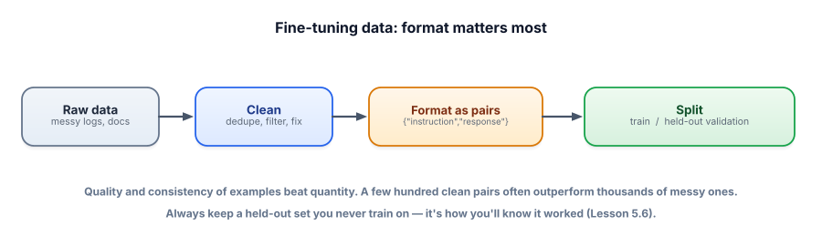

Data preparation
If fine-tuning fails, it’s almost always the data — not the algorithm. The dataset is the product of a fine-tune: the model becomes a mirror of the examples you show it. This lesson is how to build that mirror well.
Why data is the whole game
Training nudges the model toward your examples (Lesson 5.2), so whatever patterns live in your data get baked in — including the bad ones. Inconsistent formats teach inconsistency; a biased mix teaches bias; sloppy answers teach sloppiness. The hard, valuable work of fine-tuning is assembling a clean, consistent, representative set of examples in the exact shape you want the model to produce. Get this right and a simple LoRA run succeeds; get it wrong and no hyperparameter will save you.

A fine-tuning training example is an input paired with the desired output — for instruction tuning, an instruction → response pair, often expressed in a chat format (a list of role/content messages). You split your examples into a training set the model learns from and a validation set held out to measure honestly. The cardinal rule: the data’s format must match how you’ll prompt the model at inference.
Preparing fine-tuning data is like choosing which past exam answers to give a younger student to study. If you hand over a pile with messy answers, wrong answers and the same question copied 50 times, they'll learn the mess. If you hand over 300 neat, correct, varied ones, they'll learn the pattern. The analogy breaks because a student can tell a crossed-out wrong answer is wrong; a model copies whatever you show it, wrong answers included.
The quality checklist
- Consistent format. Every example in the same shape — the model copies the pattern, including inconsistencies.
- High-quality outputs. The responses are exactly what you want produced. The model imitates them faithfully, warts and all.
- Representative & diverse. Cover the real range of inputs, including edge cases, not 500 near-duplicates.
- Deduplicated & clean. Remove duplicates, junk, and contradictions; they confuse training and inflate apparent performance.
- No train/validation leakage. The same (or near-identical) example must not appear in both, or your evaluation lies to you.
- Quality over quantity. A few hundred excellent, consistent pairs routinely beat thousands of mediocre ones.
The common modern format is a list of chat messages per example, saved as JSONL (one JSON object per line). This is just data wrangling — free, no GPU.
import json, random
# raw pairs you collected/curated
raw = [
{"q": "How do I reset my password?", "a": "Go to Settings > Security > Reset password."},
{"q": "What's your refund window?", "a": "Returns are free within 30 days of delivery."},
# ... a few hundred clean, consistent examples ...
]
SYSTEM = "You are Acme's support assistant. Be concise and accurate."
def to_example(row): # SAME shape you'll use at inference
return {"messages": [
{"role": "system", "content": SYSTEM},
{"role": "user", "content": row["q"]},
{"role": "assistant", "content": row["a"]},
]}
data = [to_example(r) for r in raw]
random.shuffle(data)
split = int(0.9 * len(data))
train, val = data[:split], data[split:] # 90/10, never overlap
with open("train.jsonl", "w") as f:
for ex in train: f.write(json.dumps(ex) + "\n")
print(len(train), "train /", len(val), "val examples")Notice the system + user + assistant structure matches exactly how you’ll call the model later. If you train on one format and prompt with another, the model gets confused — train how you’ll serve.
Assumptions: a telecom company has 1,200,000 resolved support tickets with agent replies and wants a model that drafts replies in house style.
- Exact dedup. Normalise whitespace and case, then hash. Say 18% are exact duplicates (auto-replies, copy-paste macros): 1,200,000 x 0.82 = 984,000 left.
- Near-dup dedup. MinHash on word shingles removes templated replies that differ only in a name or date. Say 40% go: about 590,000 left.
- Quality filter. Keep tickets that were resolved on the first reply and rated CSAT 4-5. Say 15% pass: about 88,500.
- PII scrub. Replace phone numbers, account IDs and addresses with typed placeholders like [PHONE]. Drop tickets where scrubbing breaks the meaning. Say about 80,000 remain.
- Stratified sample. Production traffic is 30% billing, 25% network, 20% SIM and port-out, 25% other. Sample 8,000 in those proportions, capping any single intent at 5%, so a few common intents don't drown out the rest.
- Group split, not random split. Split 90/10 by customer and by month, so no customer and no week of tickets sits in both train and validation. Random splitting would leak a customer's repeated issues across the split and flatter the score.
- Human spot-check. Read 200 random examples (2.5%). If more than 5% are bad, fix the filter and rerun, rather than hand-patching rows.
Why stop at 8,000? LIMA got strong instruction-following from just 1,000 carefully curated examples (arXiv 2305.11206). Curation beats volume.
- Data is the product of a fine-tune — the model mirrors your examples, good and bad.
- Use a consistent format (instruction→response / chat messages) that matches inference.
- Quality & consistency beat quantity; hundreds of clean pairs often beat thousands of messy ones.
- Dedupe, diversify, and prevent train/validation leakage.
- Always keep a held-out validation set — it’s your only honest measure (Lesson 5.6).
Your fine-tuned model scores 98% on your validation set but performs poorly in production. You later find many validation examples were near-duplicates of training examples. What happened?
For a fine-tune, why do data quality and dedup matter more than raw quantity?
You randomly split 50,000 tickets 90/10. Many customers filed 5-10 near-identical tickets. Validation accuracy is 94%; on next month's tickets it's 78%. What is the most likely cause?
1. You have 5,000 support tickets but only ~300 have high-quality agent replies. Do you train on all 5,000 or the 300? Why?
2. Why must the training format match your inference prompt format exactly?
3. You’re short on data. Name one legitimate way to get more examples and one risk it carries.
▸ Show solutions & reasoning
1. Train on the 300 high-quality ones. The model imitates whatever you show it, so 4,700 mediocre replies would teach mediocrity and drown out the good pattern. Quality and consistency dominate; a few hundred excellent examples is a strong fine-tuning set. (You could also use the good ones to help generate/curate more — carefully.)
2. Because the model learns to produce the desired output given a specific input shape. If you train with a system message and a particular structure but prompt differently at inference, the model is now in an unfamiliar situation and behaves worse — you’ve broken the pattern it learned. “Train how you serve” keeps training and inference aligned.
3. One way: synthetic data — use a strong model to generate additional instruction/response examples for your task. The risk: it can introduce the larger model’s errors, biases, or a sameness that doesn’t reflect real inputs — so synthetic examples must be filtered and validated, not trusted blindly. (Other options: data augmentation, or mining more real examples.)
In a world where everyone can call the same base models, your data is what’s defensible. A thoughtfully curated set of examples for your specific task — your tone, your formats, your edge cases — is something competitors can’t copy from a model card. That’s why mature teams invest more in data pipelines than in clever training tricks: collecting real examples, cleaning and labeling them, generating and filtering synthetic ones, and continuously folding production failures back into the training set. The fine-tuning algorithm is a commodity; the dataset is the asset.
Two traps to internalize. First, silent format drift: a stray difference between training and serving (a missing system message, different delimiters, a different chat template) quietly degrades a model that looked great in evaluation — always serve in the exact shape you trained. Second, evaluation contamination: leakage between train and validation (or reusing your validation set so often that you implicitly tune to it) makes your numbers lie. The discipline is boring but decisive: clean data, consistent formatting, honest held-out splits. Do that and fine-tuning becomes reliable engineering; skip it and it becomes expensive guesswork.
labs/11_lora_tiny.pyFree and offline once set up: Ollama with qwen2.5:7b, plus the packages in labs/README.md. From the course folder:
python labs/11_lora_tiny.pyWhat to look for: Open the lab's tiny training set and check that each example has the same structure the model will see at inference. Duplicate one example 20 times and retrain: training loss drops faster, but the model starts parroting that one answer, a small version of the duplication problem in this lesson. The lab's data is toy-sized, so judge the direction of the change, not the numbers.
▸ Recorded output (our run, 2026-11-03, qwen2.5:7b on a laptop GPU)
base model: 798,848 params. Pre-training it on 'count UP' sequences (0123456789012...)
base loss count-up=0.097 count-down=10.885 <- it never saw 'down'
LoRA r=8 on attention + MLP: trainable=65,536 of 864,384 (7.6%)
after 0 LoRA steps: count-down loss=10.878 count-up loss=0.098
after 100 LoRA steps: count-down loss=0.100 count-up loss=9.747
after 200 LoRA steps: count-down loss=0.098 count-up loss=10.912
after 300 LoRA steps: count-down loss=0.097 count-up loss=10.695
frozen base tensors changed during LoRA training: 0 (expect 0)
adapter switched OFF: count-up loss=0.098 count-down loss=10.882 <- the old skill is back: forgetting lived in the adapter, not the base
saved adapter: 266 KB vs base model ~3120 KB in fp32
merge_and_unload: max logit difference after merging = 2.86e-06 (merged = same model, no adapter overhead)
Look: count-down loss falls while the base stays byte-identical. But count-up loss rose: with the adapter
on, the model forgot the old skill. That is why you eval BOTH the new task and the old ones (Lesson 5.6),
and why keeping adapters separate (swap or disable per task) is a real advantage of LoRA.Your numbers will differ a little run to run. Full log: labs/outputs. Source: labs/11_lora_tiny.py.
Warm-up. You have 10,000 rows. 22% are exact duplicates; of the rest, 30% are near-duplicates; 20% of what remains fails your quality filter. How many examples are left?
▸ Solution
10,000 x 0.78 = 7,800. 7,800 x 0.70 = 5,460. 5,460 x 0.80 = 4,368. Each filter multiplies, which is why raw counts badly overstate usable data. Plan your collection around the final number.
Transfer. Your examples come from three teams: one writes 'Hi there,' and bullet lists, one writes formal paragraphs, one writes one-liners. You want one consistent house style. What do you do with the data?
▸ Solution
Pick the target style and write it down with 5 gold examples. Then either keep only the examples that already match (if there are enough), or rewrite the others into the target style, by people or with a strong model plus human review, and record which examples are rewritten. Mixed styles in training teach the model to pick a style at random, which looks like inconsistency in production. Check with a style rubric on validation outputs.
Stretch. Design a pipeline that keeps the fine-tuning set fresh: production failures should flow back in each month without contaminating the eval set.
▸ Solution
Log production outputs with user feedback and reviewer corrections. Each month, sample failures and corrections, scrub PII, and send them through the same dedup and quality filters. Before adding, run near-dup matching against the frozen eval set and drop any candidate too close to an eval item. Keep the eval set frozen and versioned, with a small new eval slice each quarter for drift, kept separately. Version the training set (hash plus manifest) per model release so any result can be reproduced, and track the training mix by intent so new data doesn't skew it.
Junior What makes a good fine-tuning dataset?
▸ Model answer
Consistent format that matches exactly how the model will be prompted in production, including the system message and chat template. High-quality target outputs, because the model copies them. Coverage of the real input distribution, including edge cases, without a few common cases dominating. Deduplicated and clean. And a validation split that is truly held out. A few hundred to a few thousand excellent examples usually beat a much larger noisy set; LIMA used 1,000.
Mid How do you prevent train/validation leakage in practice?
▸ Model answer
First, dedupe across the split, not just within it, with near-duplicate detection such as MinHash or embedding similarity, since exact hashing misses templated text. Second, split by group: customer, conversation thread, document or time window, so correlated examples stay together. For anything that will run on future data, a time-based split is the most honest. Third, freeze the eval set and check every new training batch against it. Finally, if the score looks too good, measure on a fresh sample of production data before believing it.
Senior You can buy 100,000 synthetic examples generated by a frontier model, or spend the same budget on 3,000 expert-written examples. How do you decide?
▸ Model answer
Run a small pilot of both against the same eval. Synthetic data is good for coverage and format but carries the generator's errors, biases and sameness, and some providers' terms restrict training on their outputs, so I'd check the license. Expert data is better for the hard, high-stakes cases. Often the best mix is a few thousand expert examples as the core, plus synthetic data that has been filtered and graded to fill coverage gaps, with every synthetic example passing an automatic check and a sample passing human review. The decision should come from eval results per slice, not from volume.
With clean data ready, you need a way to actually train that’s cheap enough to run for free. That’s the breakthrough that made fine-tuning accessible. Next: LoRA & QLoRA.